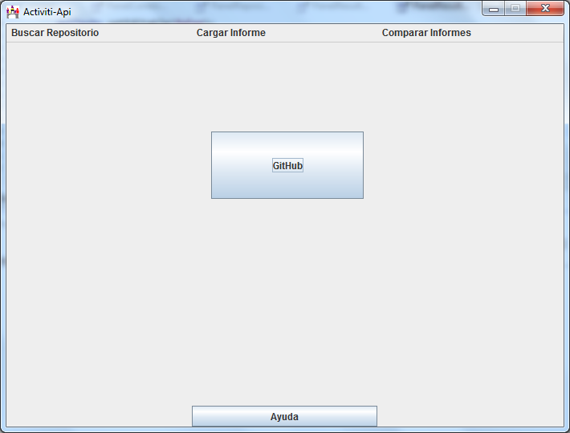

Lo primero que vemos al iniciar la aplicación es una pantalla donde aparece un botón por cada plataforma preparada para su interacción.
Actualmente la única plataforma es GitHub por lo que solo sale un botón.
Si hacemos click en el botón accedemos a la pantalla de conexión para la plataforma GitHub.
